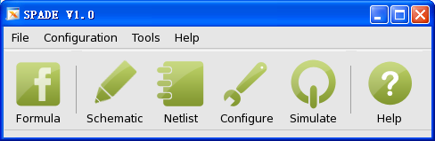

Designed by EDA Lab, SoME, SJTU
SPADE, A Simulation Program for Analog Design Education, is a symbolic simulator designed for analog designers to achieve a better analog circuit in a quicker and more convenient way. It reforms the analog design methodology into a new one with higher efficiency, that designers can directly obtain a sub-optimal circuit design without running transient simulation again and again. Only DC simulation is required in the new methodology.

Any Issue Please Contact Us: madiming@ic.sjtu.edu.cn ritchieme@gmail.com